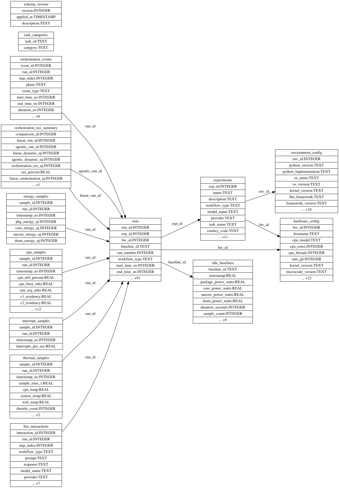

Database Schema¶
This document describes the core database schema of A-LEMS, focusing on the main tables every developer should understand.
📊 Schema Overview¶
A-LEMS uses a relational database with 10+ tables to store complete data lineage. The schema is designed for:
- Research reproducibility - Complete provenance of all measurements
- ML readiness - Flattened views for model training
- Performance - Indexed for fast queries
- Extensibility - Easy to add new metrics

Auto-generated from live database. Always up-to-date.
🗄️ Core Tables¶
1. experiments¶
Stores metadata for each experiment session.
| Column | Type | Description |
|---|---|---|
exp_id |
INTEGER | Primary key |
name |
TEXT | Experiment name |
description |
TEXT | Experiment description |
workflow_type |
TEXT | 'linear', 'agentic', or 'comparison' |
model_name |
TEXT | LLM model used |
provider |
TEXT | 'cloud' or 'local' |
task_name |
TEXT | Task identifier |
country_code |
TEXT | Grid carbon intensity region |
created_at |
TIMESTAMP | When experiment started |
group_id |
TEXT | Session identifier |
status |
TEXT | 'pending', 'running', 'completed', 'failed' |
started_at |
TIMESTAMP | Actual start time |
completed_at |
TIMESTAMP | Actual end time |
error_message |
TEXT | Error if failed |
runs_completed |
INTEGER | Number of successful runs |
runs_total |
INTEGER | Total planned runs |
optimization_enabled |
INTEGER | 0/1 flag |
hw_id |
INTEGER | Foreign key to hardware_config |
env_id |
INTEGER | Foreign key to environment_config |
Foreign Keys:
- hw_id → hardware_config.hw_id
- env_id → environment_config.env_id
2. hardware_config¶
Stores hardware fingerprints for reproducibility across different machines.
| Column | Type | Description |
|---|---|---|
hw_id |
INTEGER | Primary key |
hardware_hash |
TEXT | Unique hardware fingerprint |
hostname |
TEXT | Machine hostname |
cpu_model |
TEXT | CPU model name |
cpu_cores |
INTEGER | Physical cores |
cpu_threads |
INTEGER | Logical threads |
ram_gb |
REAL | Total RAM in GB |
kernel_version |
TEXT | Linux kernel version |
microcode_version |
TEXT | CPU microcode |
rapl_domains |
TEXT | JSON array of available RAPL domains |
created_at |
TIMESTAMP | Record creation time |
Additional Hardware Details (if available):
- cpu_architecture - x86_64, arm64, etc.
- cpu_vendor - GenuineIntel, AMD, etc.
- cpu_family - CPU family ID
- cpu_model_id - CPU model ID
- cpu_stepping - CPU stepping
- has_avx2, has_avx512, has_vmx - CPU feature flags
- gpu_model, gpu_driver, gpu_count - GPU information
- gpu_power_available - GPU power monitoring support
- rapl_has_dram, rapl_has_uncore - RAPL capabilities
- system_manufacturer, system_product, system_type - System info
- virtualization_type - VM detection
3. environment_config¶
Stores software environment for reproducibility.
| Column | Type | Description |
|---|---|---|
env_id |
INTEGER | Primary key |
env_hash |
TEXT | Unique environment fingerprint |
python_version |
TEXT | Python version |
python_implementation |
TEXT | CPython, PyPy, etc. |
os_name |
TEXT | Linux, Darwin, Windows |
os_version |
TEXT | OS version string |
kernel_version |
TEXT | Kernel release |
git_commit |
TEXT | Git commit hash |
git_branch |
TEXT | Git branch name |
git_dirty |
BOOLEAN | Uncommitted changes present |
numpy_version |
TEXT | NumPy version if installed |
torch_version |
TEXT | PyTorch version if installed |
transformers_version |
TEXT | Transformers version if installed |
created_at |
TIMESTAMP | Record creation time |
4. runs¶
Core table storing all experiment run data (80+ columns). This is the main fact table.
| Column Group | Description | Example Columns |
|---|---|---|
| Identifiers | Foreign keys and run info | run_id, exp_id, hw_id, baseline_id, run_number, workflow_type |
| Timing | Nanosecond precision timestamps | start_time_ns, end_time_ns, duration_ns |
| Energy | Energy in microjoules | total_energy_uj, dynamic_energy_uj, pkg_energy_uj, core_energy_uj |
| Performance | CPU performance counters | instructions, cycles, ipc, cache_misses |
| Scheduler | OS scheduling metrics | context_switches, thread_migrations, run_queue_length |
| Thermal | Temperature readings | package_temp_celsius, start_temp_c, max_temp_c |
| C-States | CPU idle states | c2_time_seconds, c3_time_seconds, c6_time_seconds |
| Memory | Memory usage | rss_memory_mb, vms_memory_mb |
| Tokens | LLM token counts | total_tokens, prompt_tokens, completion_tokens |
| Agentic | Agent-specific metrics | planning_time_ms, execution_time_ms, llm_calls, tool_calls |
| Sustainability | Environmental impact | carbon_g, water_ml, methane_mg |
| Efficiency | Derived metrics | energy_per_instruction, energy_per_token |
Foreign Keys:
- exp_id → experiments.exp_id
- hw_id → hardware_config.hw_id
- baseline_id → idle_baselines.baseline_id
5. idle_baselines¶
Stores idle power measurements used for baseline subtraction.
| Column | Type | Description |
|---|---|---|
baseline_id |
TEXT | Primary key |
timestamp |
REAL | Measurement timestamp |
package_power_watts |
REAL | Package idle power |
core_power_watts |
REAL | Core idle power |
uncore_power_watts |
REAL | Uncore idle power |
dram_power_watts |
REAL | DRAM idle power |
duration_seconds |
INTEGER | Measurement duration |
sample_count |
INTEGER | Number of samples |
package_std |
REAL | Standard deviation |
core_std |
REAL | Standard deviation |
uncore_std |
REAL | Standard deviation |
dram_std |
REAL | Standard deviation |
governor |
TEXT | CPU governor during measurement |
turbo |
TEXT | Turbo boost status |
background_cpu |
REAL | Background CPU usage |
process_count |
INTEGER | Running processes |
method |
TEXT | Measurement method |
📈 Sample Tables¶
6. energy_samples¶
High-frequency (100Hz) RAPL samples.
| Column | Type | Description |
|---|---|---|
sample_id |
INTEGER | Primary key |
run_id |
INTEGER | Foreign key to runs |
timestamp_ns |
INTEGER | Nanosecond timestamp |
pkg_energy_uj |
INTEGER | Package energy (µJ) |
core_energy_uj |
INTEGER | Core energy (µJ) |
uncore_energy_uj |
INTEGER | Uncore energy (µJ) |
dram_energy_uj |
INTEGER | DRAM energy (µJ) |
Index: idx_energy_run_time on (run_id, timestamp_ns)
7. cpu_samples¶
10Hz CPU telemetry from turbostat.
| Column | Type | Description |
|---|---|---|
sample_id |
INTEGER | Primary key |
run_id |
INTEGER | Foreign key to runs |
timestamp_ns |
INTEGER | Nanosecond timestamp |
cpu_util_percent |
REAL | CPU utilization |
cpu_busy_mhz |
REAL | Busy frequency |
cpu_avg_mhz |
REAL | Average frequency |
c1_residency to c10_residency |
REAL | C-state residency percentages |
package_power |
REAL | Package power (W) |
dram_power |
REAL | DRAM power (W) |
gpu_rc6 |
REAL | GPU RC6 residency |
package_temp |
REAL | Package temperature (°C) |
ipc |
REAL | Instructions per cycle |
extra_metrics_json |
TEXT | JSON blob for additional metrics |
8. interrupt_samples¶
10Hz interrupt rate samples.
| Column | Type | Description |
|---|---|---|
sample_id |
INTEGER | Primary key |
run_id |
INTEGER | Foreign key to runs |
timestamp_ns |
INTEGER | Nanosecond timestamp |
interrupts_per_sec |
REAL | Interrupt rate |
9. thermal_samples¶
1Hz temperature samples from all thermal zones.
| Column | Type | Description |
|---|---|---|
sample_id |
INTEGER | Primary key |
run_id |
INTEGER | Foreign key to runs |
timestamp_ns |
INTEGER | Nanosecond timestamp |
sample_time_s |
REAL | Seconds since run start |
cpu_temp |
REAL | CPU temperature (°C) |
system_temp |
REAL | System temperature (°C) |
wifi_temp |
REAL | WiFi temperature (°C) |
throttle_event |
INTEGER | Throttling detected (0/1) |
all_zones_json |
TEXT | JSON of all thermal zones |
sensor_count |
INTEGER | Number of sensors |
🧩 Event Tables¶
10. orchestration_events¶
Tracks agentic workflow steps for tax calculation.
| Column | Type | Description |
|---|---|---|
event_id |
INTEGER | Primary key |
run_id |
INTEGER | Foreign key to runs |
step_index |
INTEGER | Step number |
phase |
TEXT | 'planning', 'execution', 'synthesis' |
event_type |
TEXT | 'llm_call', 'tool_call', 'waiting' |
start_time_ns |
INTEGER | Event start |
end_time_ns |
INTEGER | Event end |
duration_ns |
INTEGER | Event duration |
power_watts |
REAL | Power during event |
cpu_util_percent |
REAL | CPU utilization |
interrupt_rate |
REAL | Interrupt rate |
event_energy_uj |
INTEGER | Energy consumed |
tax_contribution_uj |
INTEGER | Tax contribution |
tax_percent |
REAL | Tax percentage |
11. orchestration_tax_summary¶
Pre-computed tax metrics per pair of runs.
| Column | Type | Description |
|---|---|---|
comparison_id |
INTEGER | Primary key |
linear_run_id |
INTEGER | Foreign key to runs |
agentic_run_id |
INTEGER | Foreign key to runs |
linear_dynamic_uj |
INTEGER | Linear energy |
agentic_dynamic_uj |
INTEGER | Agentic energy |
orchestration_tax_uj |
INTEGER | Absolute tax (agentic - linear) |
tax_percent |
REAL | Tax percentage |
linear_orchestration_uj |
INTEGER | Linear orchestration |
agentic_orchestration_uj |
INTEGER | Agentic orchestration |
👁️ Views¶
12. ml_features¶
Flattened view for ML training with 80+ features.
CREATE VIEW ml_features AS
SELECT
r.run_id,
e.workflow_type,
e.provider,
r.duration_ns / 1e6 AS duration_ms,
r.dynamic_energy_uj / 1e6 AS energy_j,
r.ipc,
r.cache_miss_rate,
r.instructions,
r.cycles,
-- ... 70+ more columns
FROM runs r
JOIN experiments e ON r.exp_id = e.exp_id;
🔗 Relationships Diagram
text
markdown
### Database Relationships
The database schema follows these key relationships:
text
#### Foreign Key Dependencies
| Source Table | Foreign Key | Target Table | Relationship |
|--------------|-------------|--------------|--------------|
| `runs` | `exp_id` | `experiments` | Many runs belong to one experiment |
| `runs` | `hw_id` | `hardware_config` | Many runs share same hardware |
| `runs` | `env_id` | `environment_config` | Many runs share same environment |
| `energy_samples` | `run_id` | `runs` | One run has many samples |
| `cpu_samples` | `run_id` | `runs` | One run has many CPU samples |
| `interrupt_samples` | `run_id` | `runs` | One run has many interrupt samples |
| `thermal_samples` | `run_id` | `runs` | One run has many thermal samples |
| `orchestration_events` | `run_id` | `runs` | One run has many events |
| `llm_interactions` | `run_id` | `runs` | One run has many LLM interactions |
| `orchestration_tax_summary` | `linear_run_id` | `runs` | Links linear run to tax summary |
| `orchestration_tax_summary` | `agentic_run_id` | `runs` | Links agentic run to tax summary |
#### Cardinality Summary
| Relationship | Type | Description |
|--------------|------|-------------|
| experiments → runs | One-to-Many | One experiment can have multiple runs |
| hardware_config → runs | One-to-Many | Same hardware used for many runs |
| environment_config → runs | One-to-Many | Same environment used for many runs |
| runs → sample tables | One-to-Many | One run generates many samples |
| runs → orchestration_events | One-to-Many | One run generates many events |
| runs → orchestration_tax_summary | One-to-One | One pair generates one tax summary |
## 📊 Sample Queries
### Get Latest Experiment with Hardware
```sql
SELECT
e.exp_id,
e.task_name,
e.provider,
h.cpu_model,
env.python_version,
env.git_commit
FROM experiments e
LEFT JOIN hardware_config h ON e.hw_id = h.hw_id
LEFT JOIN environment_config env ON e.env_id = env.env_id
ORDER BY e.exp_id DESC
LIMIT 1;
Calculate Average Tax by Provider¶
SELECT
e.provider,
AVG(ots.tax_percent) as avg_tax,
COUNT(*) as samples
FROM orchestration_tax_summary ots
JOIN runs r ON ots.linear_run_id = r.run_id
JOIN experiments e ON r.exp_id = e.exp_id
GROUP BY e.provider;
Get Energy Samples for a Run¶
SELECT
timestamp_ns,
pkg_energy_uj / 1e6 as energy_j
FROM energy_samples
WHERE run_id = 977
ORDER BY timestamp_ns;
🔧 Maintenance¶
Run Migrations¶
Create Fresh Database¶
Backup Database¶
This schema document corresponds to the diagram at ../assets/diagrams/database-schema-auto.svg.